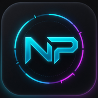

Игроки Fortnite сходят с ума по бесплатным скинам: ради редких жетонов они прокладывают маршруты по сундукам
В Fortnite начался настоящий охотничий сезон: игроки готовы обшаривать десятки сундуков за один матч ради крошечного шанса получить один из самых желанных подарков Epic Games. Некоторые уже прокладывают оптимальные маршруты для ускорения поисков…